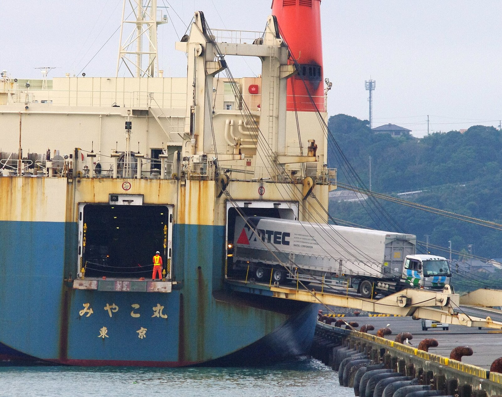
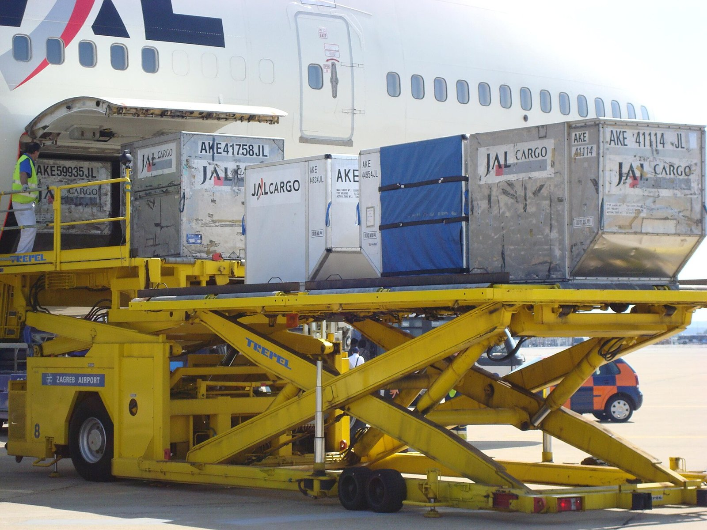
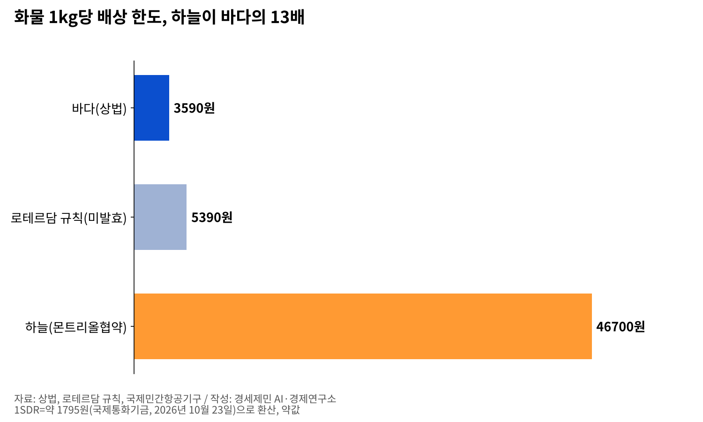
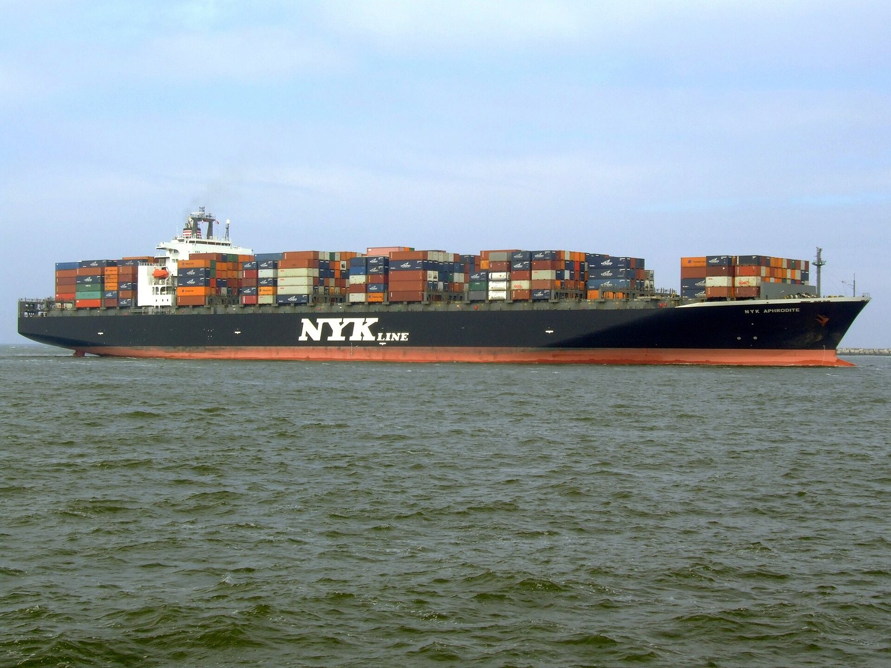
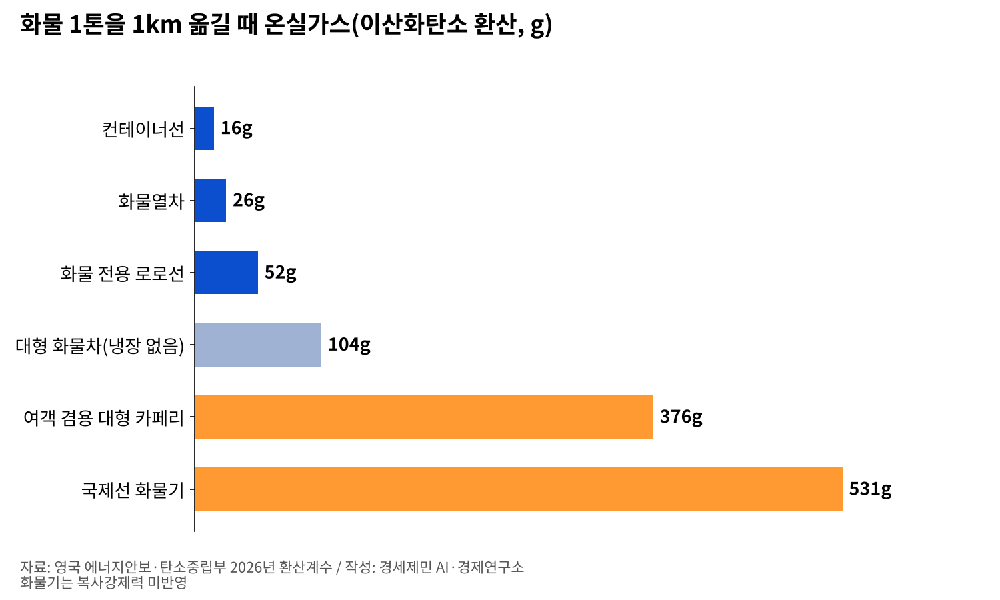

[인천항 복합물류③] 운송인은 하나인데 배상 잣대는 구간마다, 18년째 발효 못 한 로테르담 규칙
1kg당 배상 한도 바다 3590원·하늘 4만6700원
아크라 서명을 앞둔 유엔 양도성 화물서류협약
AI경세제민=김갑봉 기자 | 국제 복합운송은 운송인 하나가 두 가지 이상 운송수단을 잇는다. 배상 잣대는 손해가 난 구간에 따라 달라진다.

트럭째 카페리로, 웨이하이에서 인천공항까지
국토교통부와 관세청은 2023년 4월 3일부터 6개월 동안 한중트럭복합운송 시범사업을 한다고 밝혔다. 웨이하이공항과 웨이하이항, 인천항, 인천공항을 잇는다.
화물은 트럭에서 내리지 않는다. 트럭째 카페리로 인천항에 닿고 항공 일정에 따라 그날 인천공항 비행기에 오를 수 있다.
2007년 7월 31일 자동차관리의 특례에 관한 규칙이 바뀌어 외국 화물차가 항만과 공항 보세구역 사이 직선거리 100km 안 지정 구간을 달릴 수 있게 됐다.
건설교통부는 그해 5월 상호운행 양해각서를 맺은 나라 화물차에 한해 허가한다고 밝혔다.
경인일보 2026년 2월 보도를 보면 시범 운영은 2024년 12월부터 2025년 11월까지 이어졌고 973톤을 날랐다. 2023년 발표와 운영 시기가 다르다. 두 나라 화물차 환경 기준이 달라 중국 차량은 한국 도로를 달리지 못했다.
같은 보도는 국토교통부가 상반기 전면 시행을 준비한다고 전했다. 그 특례 규칙은 10월 현재 2025년 2월 시행본에서 바뀌지 않았다.
배 없는 운송인, 국제물류주선업자
복합운송인이 배를 가질 필요는 없다. 물류정책기본법은 국제물류주선업을 남의 수요에 따라 자기 명의와 계산으로 수출입화물 물류를 주선하는 사업으로 정의한다. 흔히 포워더라 부른다.
대법원은 2019년 7월 10일 판결에서 이 업자가 자기 이름으로 선하증권과 항공화물운송장을 낼 수 있다고 짚었다. 자기 명의로 운송을 맡으면 복합운송인이 된다고 봤다. 선하증권은 화물 권리를 담은 증권이다.
국제운송주선인협회연맹(FIATA)은 포워더용 복합운송 선하증권 FBL(FIATA Multimodal Transport Bill of Lading)을 만들었다.
FBL은 유엔무역개발회의·국제상업회의소 복합운송증권 규칙을 따르고, 증권을 넘기면 화물 권리도 함께 넘어가는 양도성 증권이다.
1kg당 바다 3590원, 하늘 4만6700원

상법은 바다 구간 화물 손해 배상 한도를 포장 하나당 666.67계산단위와 1kg당 2계산단위 가운데 큰 쪽으로 정한다. 계산단위는 국제통화기금 특별인출권(SDR)이다.
2026년 10월 23일 국제통화기금 값으로 1SDR은 약 1795원이다. 한도는 1kg 기준 약 3590원, 포장 하나 기준 약 120만원이다.
국제민간항공기구는 몬트리올협약 국제 항공화물 배상 한도를 2024년 12월 28일부터 1kg당 26SDR로 올렸다. 약 4만6700원으로 바다 1kg 기준 13배다. 아직 발효되지 않은 로테르담 규칙 한도는 1kg당 3SDR(약 5390원)이다.

손해 구간을 모르면 규범이 갈린다. FBL이 따르는 그 규칙은 자체 한도를 쓴다. 상법 제816조는 운송거리가 가장 긴 구간 법을, 거리로 못 가리면 운임이 가장 비싼 구간 법을 쓴다.
제주에서 인천항으로, 해상법이 가른 판결
그 대법원 판결은 제주에서 뭍으로 가는 국내 사건이다. 제주특별자치도개발공사는 권역별 사업단(컨소시엄) 셋과 같은 조항으로 계약했다. 2014년 상반기 두 사업단이 물량을 제때 못 나르자 다른 업체에 맡기고 2016년 12월 소송을 냈다.
법원은 손해 구간을 가릴 수 없다고 봤다. 인천항과 평택항을 거친 사업단은 바다 구간이 약 483~488km로 가장 길어 해상법이 적용됐다. 해상 소송 기한 1년이 지나 이 사업단에 낸 소송은 각하됐다.
완도항과 녹동항을 거친 사업단은 육상 구간이 더 길어 육상법이 적용됐고 비용 차액을 물게 됐다.
같은 계약 조항, 같은 종류의 손해에서 항로가 결론을 갈랐다. 상법 제816조는 국내 복합운송과 국제 복합운송을 가르지 않는다.
이정원 교수(당시 부산대 법학전문대학원)는 2020년 이 판결을 평석했다. 육상 100km와 바다 101km처럼 근소한 차이가 적용 법을 바꾼다고 짚었다. 입법을 촉구한 지 6년, 2026년 9월 10일 시행 상법에도 제816조는 그대로다.
묶지 못한 조약, 아크라 서명 앞둔 서류 협약

로테르담 규칙은 바다 구간이 낀 운송을 문 앞에서 문 앞까지 다룬다. 2008년 12월 채택됐고 25개국이 서명했다. 비준·가입은 에스파냐·토고·콩고·카메룬·베냉 5개국이고 문턱은 20개국이다. 한국은 서명하지 않았다.
유엔은 운송수단을 가리지 않는 양도성 화물서류 협약을 2025년 12월 15일 채택했다. 서명은 2026년 10월 26일 가나 아크라에서 받기로 했다. 운송인 책임은 건드리지 않는다.
국제해사기구는 해운 탄소 가격 체계 채택을 아직 정하지 못했다. 유럽연합은 2024년 해운을 배출권거래제에 넣었고, 운송 온실가스 산정 규정은 2026년 6월 1일 발효됐다. 국제표준(ISO 14083)대로 모든 수단 배출을 한 방법으로 센다. 배출량을 스스로 공개하는 기업에 걸린다.
모달시프트는 화물을 저배출 수단으로 옮기는 일이다. 영국 정부 2026년 환산계수로 화물 1톤을 1km 옮기면 컨테이너선은 이산화탄소 환산 16g을 낸다. 화물열차 26g, 냉장하지 않는 대형 화물차 평균 104g이다.
여객 겸용 대형 카페리는 376g으로 컨테이너선의 23배다. 화물 전용 로로선은 52g이다. 국제선 화물기는 531g이다(복사강제력 미반영).

한중트럭복합운송은 이 가운데 카페리와 화물기를 잇는다.
참고문헌
- 건설교통부, "국제 트럭복합일관수송이 가능해져 동북아 물류허브 가속화", 2007년 5월 28일. KDI 경제정책 시계열서비스 소장. https://epts.kdi.re.kr/archive/frwdHist/view2?EPIC_NUM=88309
- 『United Nations Convention on Contracts for the International Carriage of Goods Wholly or Partly by Sea』, 유엔국제상거래법위원회(UNCITRAL), 2014년 6월판. https://uncitral.un.org/sites/default/files/media-documents/uncitral/en/rotterdam-rules-e.pdf
- 대법원, 2019년 7월 10일 선고 2019다213009 판결 [공2019하,1540]. https://casenote.kr/대법원/2019다213009
- 국토교통부, "한중트럭복합운송 시범사업 추진한다", 2023년 4월 4일. https://www.korea.kr/briefing/pressReleaseView.do?newsId=156560811
- "2024 Revised Limits of Liability Under the Montreal Convention 1999", 국제민간항공기구(ICAO), 생산일자 미상(2024년 12월 28일 발효분). https://www.icao.int/sites/default/files/secretariat/legal/LEB%20Treaty%20Collection%20Documents/2024_Revised_Limits_of_Liability_Under_the_Montreal_Convention_of_1999_en.pdf
- 「자동차관리의 특례에 관한 규칙」 제8조의4(본조신설 2007년 7월 31일), 국가법령정보센터, 2025년 2월 21일 시행본. https://www.law.go.kr/법령/자동차관리의특례에관한규칙/제8조의4
- 「물류정책기본법」 제2조, 국가법령정보센터, 2025년 10월 1일 시행본. https://www.law.go.kr/법령/물류정책기본법/제2조
- "Marine Environment Protection Committee “back on track” towards consensus on global shipping emissions", 국제해사기구(IMO), 2026년 5월 1일(84차 회의 폐막). https://www.imo.org/en/mediacentre/pressbriefings/pages/imo-progresses-work-on-ship-emissions-pollution-and-ocean-protection.aspx
- 『United Nations Convention on Negotiable Cargo Documents』, 유엔국제상거래법위원회(UNCITRAL), 2026년. https://uncitral.un.org/sites/default/files/2026-05/ncd_convention_ebook_eng.pdf
- "New EU rules harmonising transport emissions calculations take effect", 유럽연합 집행위원회 모빌리티·운송총국, 2026년 6월 1일. https://transport.ec.europa.eu/news-events/news/new-eu-rules-harmonising-transport-emissions-calculations-take-effect-2026-06-01_en
- "Greenhouse gas reporting: conversion factors 2026", 영국 에너지안보·탄소중립부(DESNZ), 2026년 6월(7월 수정본). https://www.gov.uk/government/publications/greenhouse-gas-reporting-conversion-factors-2026
- "Regulatory Alert: Driving Forward the Ratification of the NCD Convention", 국제운송주선인협회연맹(FIATA), 2026년 6월 26일. https://fiata.org/n/regulatory-alert--driving-forward-the-ratification/
- 「상법」 제770조·제797조·제816조, 국가법령정보센터, 2026년 9월 10일 시행본. https://www.law.go.kr/법령/상법/제816조
- "Currency units per SDR for October 2026", 국제통화기금(IMF), 2026년 10월 23일 값. https://www.imf.org/external/np/fin/data/rms_mth.aspx?SelectDate=2026-10-31&reportType=CVSDR
- "Status: United Nations Convention on Contracts for the International Carriage of Goods Wholly or Partly by Sea (New York, 2008) (the "Rotterdam Rules")", 유엔국제상거래법위원회(UNCITRAL), 2026년 10월 24일 열람. https://uncitral.un.org/en/texts/transportgoods/conventions/rotterdam_rules/status
- "Frequently Asked Questions", 국제운송주선인협회연맹(FIATA) eFBL, 생산일자 미상. https://www.efbl.fiata.org/faq
- "Reducing emissions from the shipping sector", 유럽연합 집행위원회 기후행동총국, 생산일자 미상(2026년 10월 25일 열람). https://climate.ec.europa.eu/areas-action/transport-decarbonisation/reducing-emissions-shipping-sector_en
- UNCTAD 사무국, "Implementation of Multimodal Transport Rules: Comparative Table", UNCTAD/SDTE/TLB/2/Add.1, 2001년 10월 9일. https://unctad.org/system/files/official-document/posdtetlbd2a1.en.pdf
- 이정원, "복합운송계약과 운송인의 손해배상책임 - 대법원 2019. 7. 10. 선고 2019다213009 판결의 평석을 중심으로 -", 『선진상사법률연구』 통권 제91호, 법무부, 2020년 7월, 129-154쪽. https://www.moj.go.kr/bbs/moj/166/414253/download.do
- 김주엽, "중국 화물차, 조만간 인천 도로 달린다", 경인일보, 2026년 2월 4일. https://www.kyeongin.com/article/1758667
[사진·도표 출처]
- [사진1] Trans5885, 「みやこ丸 ドレージ作業01.JPG」, 2011년 9월 11일, 위키미디어 공용, 퍼블릭 도메인. https://commons.wikimedia.org/wiki/File:みやこ丸_ドレージ作業01.JPG
- [사진2] Wikideas1, 「Well car-8.jpg」, 2023년 11월 2일, 위키미디어 공용, CC0 1.0. https://commons.wikimedia.org/wiki/File:Well_car-8.jpg
- [사진3] Dtom, 「Unloading JAL 747.jpg」, 2008년, 위키미디어 공용, 퍼블릭 도메인. https://commons.wikimedia.org/wiki/File:Unloading_JAL_747.jpg
- [사진4] AlfvanBeem, 「Nyk Aphrodite p2 approaching Port of Rotterdam, Holland 09-Apr-2007.jpg」, 2007년 4월 9일, 위키미디어 공용, CC0 1.0. https://commons.wikimedia.org/wiki/File:Nyk_Aphrodite_p2_approaching_Port_of_Rotterdam,_Holland_09-Apr-2007.jpg
- [도표1] 경세제민 AI·경제연구소 작성. 자료 상법 제797조, 로테르담 규칙, 국제민간항공기구 몬트리올협약 2024년 개정 한도, 국제통화기금 2026년 10월 23일 SDR 값
- [도표2] 경세제민 AI·경제연구소 작성. 자료 영국 에너지안보·탄소중립부 「Greenhouse gas reporting: conversion factors 2026」
※ 이 기사는 AI 프로그램 클로드를 활용해 작성했습니다.
관련기사
- [인천항 복합물류②] 인천항을 나서는 화물은 모두 트럭에 오른다
- [인천항 복합물류①] 서류 한 장이 배와 철도와 트럭을 묶는다
- 세계 최초 1만톤 전기 컨테이너선 中 상업 운항… 인천항 피더는
- [해양 AI 융복합⑩] 부두 하나서 효율 17% 올린 디지털 트윈, 부산항 전체로 넓히는 388억원 계획
저작권자 © AI경세제민 무단전재 및 재배포, AI학습 및 활용 금지